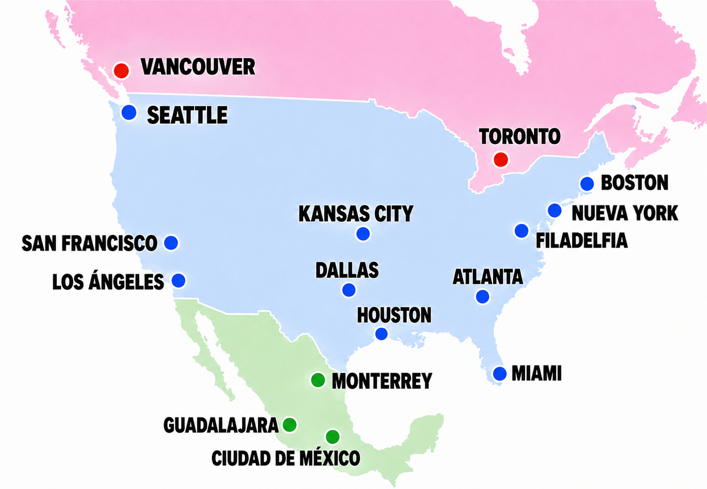

Dashboard deportivo
Inicio
Cuenta regresiva
Rumbo al Mundial FIFA 2026
Centro informativo previo al torneo para consultar calendario, selecciones, planteles, posiciones e historia mundialista.
Próximos partidos
Proporción de nacidos en el país representado
Noticias y alertas
El torneo 2026 se juega con 48 selecciones y 104 partidos.
La lectura demografica usa 1.248 jugadores como base total.
La capa local queda preparada para conectar fuentes deportivas oficiales.
Calendario 2026
Vista por semanasActualizacion de resultados
Guardado localCarga los marcadores finales a medida que se juegan los partidos. La app recalcula posiciones, clasificados y llaves con los datos guardados en este navegador.
Partidos del torneo
Ranking de descanso por seleccion
Fase de gruposRanking ordenado de mayor a menor tiempo total de descanso entre partidos. El calculo usa las fechas y horas locales registradas en el calendario de grupos.
| # | Seleccion | Horas 1-2 | Horas 2-3 | Total horas |
|---|
Reglas fundamentales del futbol
Base universalNuevas reglas 2026
Mundial 2026VAR y aplicacion en partido
Revisiones y sancionesFuentes oficiales
FIFA / IFABMapa de sedes
Ruta anfitriona 2026
Distribucion visual de las ciudades sede en Canada, Mexico y Estados Unidos para ubicar el torneo antes de revisar cada estadio.

Sedes y estadios
Canada / Mexico / Estados UnidosRanking FIFA
FIFA/Coca-ColaRanking local de referencia para las selecciones del hub. La fuente oficial se enlaza al final de la tabla para actualizar posiciones cuando FIFA publique un nuevo corte.
Glosario futbolero
Espanol ColombiaResumen de posiciones por grupo
Previo al torneoRondas eliminatorias preparadas
Sin clasificados definidosPronostico del participante
Sin guardarCompleta tus datos, marca una opcion por partido de grupos y luego selecciona los ganadores en las llaves. Cuando termines, guarda el pronostico y genera el PDF para conservar una copia.
Pronosticos de fase de grupos
| Jugador | Equipo | Goles | Asistencias | Minutos |
|---|
Selecciones
Cajas compactasResumen calculado con los datos locales de jugadores disponibles. El porcentaje de futbolistas en clubes del exterior usa clubes identificados como locales por seleccion; los registros sin club confirmado no se cuentan en ese porcentaje.
Jugadores
Estilo PaniniFichas enriquecidas con datos locales del album, Wikidata y Wikimedia Commons. Los registros sin identidad verificable se mantienen como por confirmar.
Clubes profesionales
Jugadores convocadosRanking calculado con los clubes registrados en las listas locales de convocados. Los nombres equivalentes se agrupan para evitar duplicados por abreviaturas o idiomas.
Detalle por club
Tabla completa| # | Club | Jugadores | Selecciones | Jugadores citados |
|---|
Mundiales anteriores
1930-2022Arquero destacado muestra el premio oficial de mejor guardameta desde 1994; antes de esa edición no se registra un ganador oficial comparable.
| Año | Sede | Top 4 | Equipos | Partidos | Goles | Prom. gol | Goleador | Arquero destacado | Colombia |
|---|